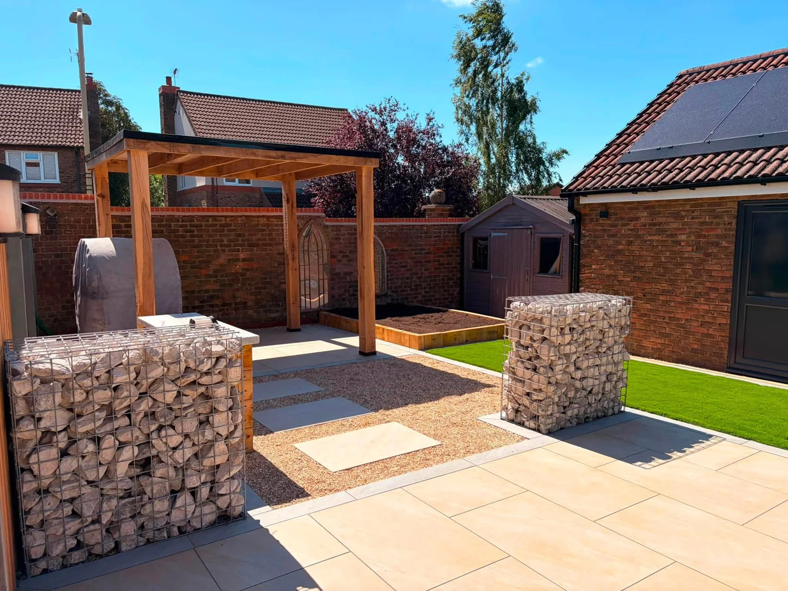

DG OUTDOOR LIVING · LEICESTERSHIRE
3D garden design.
Picture the possibilities first.
DG OUTDOOR LIVING
Let’s shape your space.
3D design is available to help explore an outdoor space before the work starts. Tell us your priorities, dimensions, preferred materials and budget so we can discuss the design scope. The photographs here show completed projects; they are not design renders.
Send a few photographs, your postcode and approximate dimensions. We can discuss the work and arrange the next step.
Request a free quote →OUR PROJECTS
A closer look at the work.
Select a photograph for the full view.
FREE PROJECT QUOTE
Let’s talk about your outdoor space.
Tell us what you have in mind. This form opens a WhatsApp draft with all your details, ready for you to review, add photos and send.